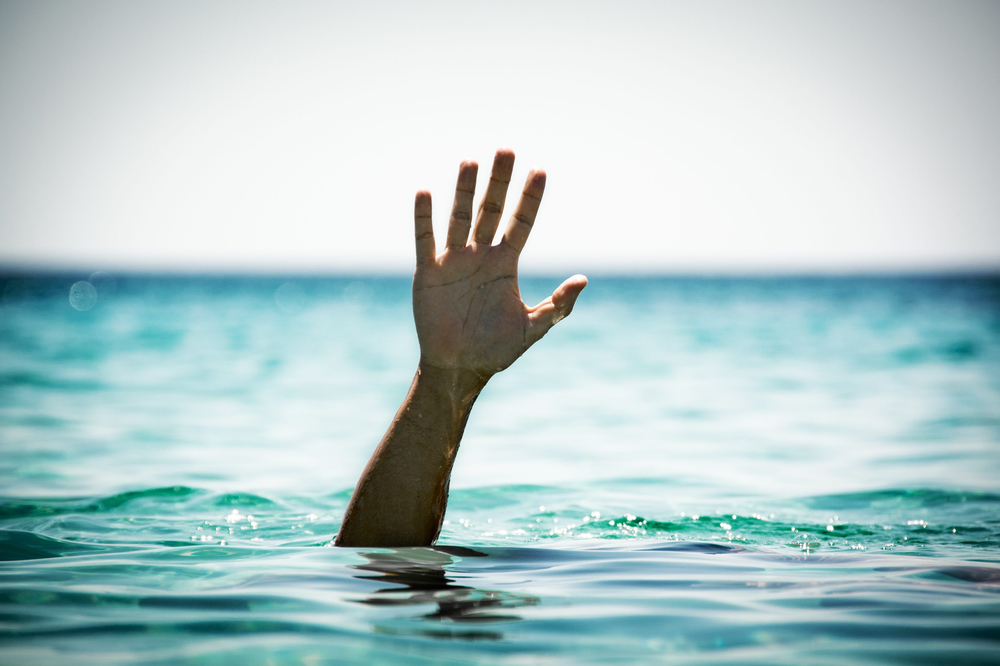

Hobby

Je viens de la Réunion, cette île est magnifique,il fait bon y vivre.Malgré tout, elle est isolée et limitée économiquement,ce qui incite à voyager pour le travail ou le loisir. Je suis déjà parti à l'île Maurice, Chine, thaïlande,Cambodge et Angleterre.
Venant de la Réunion, il est presque naturel de savoir nager, depuis mon enfance, je bois la tasse dans mers, rivières et piscines. =D
Depuis tout jeune, j'ai pu commencer à m'amuser avec les vieilles gameboy grises, puis les consoles de mes cousins tel que la nintendo64, puis la playstation etc.. Jusqu'à arriver sur le pc et ne plus jamais en sortir